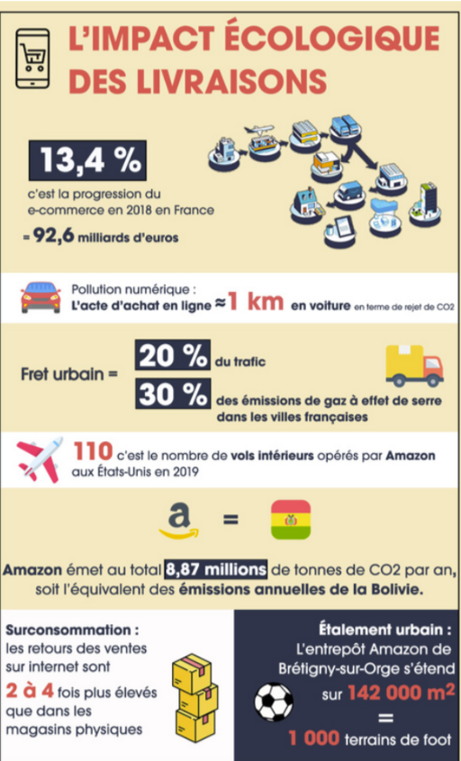
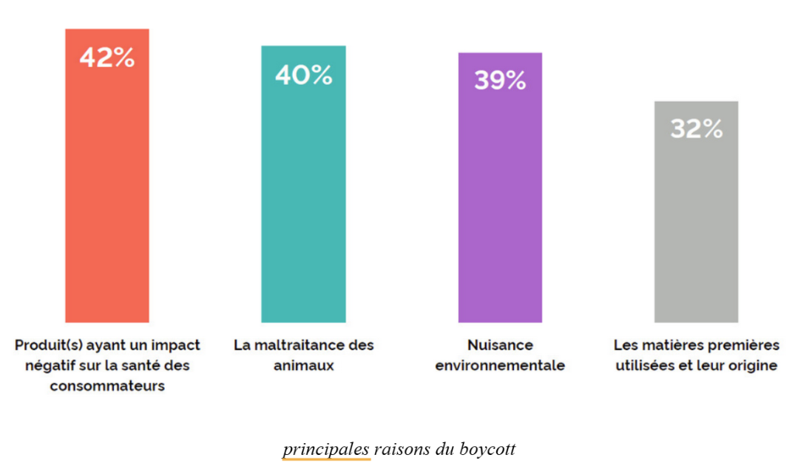

Résumé
Cet article présente les défis associés au E-commerce et les dérives des différentes entreprises. Il remet en jeu ce modèle sur différents aspects : économique, social et écologique. Il permet aussi de dénoncer les stratégies marketing employées par les marques.
Source
E-commerce : Acheter en Un Clic mais à Quel Prix ?
Les temps changent, et il est bientôt loin celui où les entreprises ne faisaient que du business pour du business. Les années 2010 ont commencé à ancrer dans les esprits des consommateurs que les valeurs éthiques d’une entreprise jouent un rôle de plus en plus prépondérant dans leur choix. Et l’e-Commerce n’y échappe pas, bien au contraire. Ainsi, les marques adoptent de plus en plus un discours se voulant éco-responsable, made in France.. Une stratégie marketing bien pensée qui choisit de payer des influenceurs, des célébrités pour promouvoir leurs produits afin de créer une confiance avec les consommateurs sur des plateformes déshumanisées. Les entreprises n’hésitent pas à utiliser tous les moyens possibles pour essayer de rassurer, notamment les nouveaux consommateurs. En effet, seulement 46 % des 15-24 ans déclarent avoir foi dans les plateformes d’e-commerce (source ACSEL). Cela témoigne d’une dégradation dans les relations entre clients-vendeurs. Mais alors, pourquoi une baisse de confiance chez les plus jeunes alors que les ventes en ligne augmentent chaque année ? Comment expliquer cette diminution alors que les entreprises se veulent éthiques et clament leurs efforts, leurs actions sur leur site internet. Doit-on remettre en cause la véracité des propos émis par les entreprises. Est-ce que les entreprises jouent sur leur image grâce aux plateformes en ligne qui décuplent la fosse entre le client et le vendeur. Il est tout naturel que chaque entreprise vendant un service ou un bien se doit d’être attractif. Offrant un catalogue divers, à portée de main et rapide, l’acheteur se plait dans cette facilité. Cependant, derrière cette façade de commodité et d’innovation se cache une réalité qui soulève des questions éthiques majeures. Les plateformes en ligne, moteurs de cette révolution, sont désormais au centre des critiques pour leurs pratiques jugées déshumanisantes, anti-concurrentielles et préjudiciables à la société.
Pour pouvoir continuer, il faut déjà rappeler ce qu’est une entreprise éthique. Dans les faits, c’est une une structure dont les prises de décision, la stratégie économique et la communication s'effectuent dans le respect de l'environnement, des humains et de la justice. Ainsi une entreprise doit respecter ces trois principes et ne pas négliger l’un d’eux.
Pour commencer nous allons traiter le point environnemental. Par principe, il est difficile pour ce modèle d’être écologique. Entre refroidissement des Data-centers, nombreuses livraisons aux quatres coins du monde; les émissions de CO² sont inévitables. Il ne faut pas oublier les émissions indirectes de l'entreprise, telles que les émissions liées à l’énergie, l’élimination des déchets et des invendus ou même les voyages d'affaires. Cependant l’entreprise peut essayer d’avoir un bilan neutre. C'est-à-dire entreprendre des actions pour que les émissions émises soient compensées ( plantation d’arbres, énergie renouvelable par exemple ) .
Les émissions de CO² ne sont pas le seul indicateur de pollution. Le sur-emballage plastique ou les colis perdus représente aussi une masse importante de déchets dans le monde. Tout cela amplifié par la surconsommation qui ne cesse d’augmenter. Nombreux sont les consommateurs qui jettent des achats pour manque d’utilité ou de qualité. C’est un sujet traité dans la partie Consommation . Là où certaines entreprises réalisent l’importance marketing que cela représente et entreprennent des missions, d’autres préfèrent proclamer tout haut leurs résultats énergétiques positifs et les actions entreprises. Un fouillis de blabla qui cache des stratégies mesquines comme l’a fait Amazon, leader de la vente en ligne. Le géant du E-commerce dévoile avoir réussi son objectif d’avoir 100 % de son énergie renouvelable. Cependant Amazon fait tourner les centrales à charbon et ouvre de nouveaux forages de gaz en Virginie pour alimenter ses data-centers mais réussit tout de même son défi 100% énergie renouvelable, c’est fort. Et Amazon n’est pas le seul. Nombreuses sont les entreprises qui préfèrent adopter cette technique se cachant derrière de nombreuses promesses malgré des bénéfices exorbitants.
L'essor d’internet apporte, avec ses nombreux avantages, une question de respect des valeurs humaines; d’un point de vue interne mais aussi externe. C’est-à-dire remettre en cause le respect des consommateurs et des employés en entreprises. En effet, là où l’information se transmettait à travers la publicité papier, les journaux ou même la télévision, aujourd’hui la frontière entre attraction et achat n’existe plus. Les consommateurs sont accablés de publicités sur internet où il leur suffit d’un clic pour être directement envoyés sur l’offre. Ainsi toutes les transactions s'accélèrent et cela entraîne deux problématiques. D’une part la problématique d’addiction des consommateurs. Ici le vendeur n’est plus là pour répondre à une demande, un manque du client mais c’est le client qui est là pour acheter les biens proposés par le vendeur. L’acheteur soumit à un algorithme, inconscient, se retrouve amené sur des centaines d’objets ciblés en fonction de ses recherches. Il n’y a plus cette notion de manque et mène les consommateurs à l’addiction. D’une autre part, d’un point de vue interne à l’entreprise, on peut réfléchir à l’impact de cela sur la cadence imposée. Dès l’achat en ligne, le produit doit être envoyé le plus rapidement au lieu de livraison et cela impose une logistique infaillible autant pour les employés. Ainsi la numérisation des plateformes a permis aux entreprises de s'implanter dans des lieux plus isolés où le prix du terrain est moins cher. Le client n’ayant pas besoin de voir une façade attrayante, les entrepôts sont souvent hermétiques et réalisés pour que l’organisation soit la plus simple. Dans les entrepôts, les cadences imposées, la surveillance intrusive et les objectifs démesurés engendrent une pression constante. Les travailleurs doivent affronter des environnements physiques éprouvants, avec un risque élevé de blessures et un manque de reconnaissance et d’évolution. Les entreprises font subir des conditions de travail difficiles, voire abusives, à leurs employés seulement pour respecter le rythme voulu. De plus, malgré les bénéfices considérables des grosses entreprises du e-commerce, la précarité des travailleurs est un point de tension. Par ailleurs, la précarité des travailleurs indépendants, tels que les livreurs ou chauffeurs, est un autre point de tension. Ces plateformes externalisent une grande partie de leur main-d’œuvre, contournant ainsi les obligations sociales comme les cotisations ou les garanties de sécurité de l’emploi. Cette approche soulève des questions sur la responsabilité des entreprises dans la protection des droits des travailleurs. Il est assez facile de trouver des cas montrant les dérives de ces plateformes de E-commerce. Prenons l’exemple du géant chinois Shein . Et malheureusement, il n’est pas le seul.

Pour contrer ce défi, différents syndicats émergent pour défendre les droits des employés et essayer de faire pression sur les leaders du E-commerce et ainsi instaurer des pratiques plus équitables. On peut marquer l’année 2022 comme l’une des premières avancées par la création d'Amazon Labor Union (ALU) : le premier syndicat reconnu chez Amazon. Porté par ses travailleurs, ce mouvement a permis de montrer les pratiques controversées de l’entreprise telles que la surveillance, les conditions de travail et de rémunération. Plus globalement en Europe, des grèves massives organisées par des syndicats telle que la CGT en France ont aussi marqué les esprits, exigeant de meilleures conditions pour les employés des entrepôts. Cependant, les syndicats ont des difficultés à trouver du soutien chez les travailleurs. En effet, entre la dispersion des effectifs à travers la France, l’engagement syndical limité par l’abus d’utilisation de contrats temporaires et la résistance des entreprises dotées de ressources juridiques; on comprend mieux la date tardive du premier syndicat chez Amazon. Cependant, ils peuvent trouver soutien chez les consommateurs ou chez les organisations de défense des droits humains. L’aide des réseaux sociaux permettent de toucher un plus grand nombre de personnes et faire appel au boycott. Ils peuvent aussi s’allier avec des mouvements internationaux comme UNI Global Union, leur permettant d’organiser des actions à l’échelle mondiale.
Cependant, il est difficile de noter cette différence à l’échelle mondiale. En effet, malgré de nombreuses initiatives françaises, les bénéfices des géants du E-commerce ne cessent d’augmenter. Selon une étude de YouGov, une société internationale de sondages, montre que 40% des personnes françaises interrogées ont déjà temporairement ou définitivement arrêté d’utiliser une marque suite à un scandale.

Parmi les personnes interrogées ayant déclaré avoir déjà boycotté, 49 % d’entre elles souhaitent bannir définitivement la marque en question. Alors que la part des Français concernés est assez importante, aucun boycott dans le secteur du E-commerce nous vient à l’esprit en France. L’efficacité de cette méthode est assez mitigée. Il s’est avéré, selon une étude menée par le Journal of Business Research, que le boycott « n’entraîne pas de pertes financières chez les compagnies ciblées». Bien au contraire, un acte de ce genre revalorise l’entreprise à hauteur de 0,66%. Une autre étude, entreprise par l'Institute for Policy Research, montre “qu'un boycott typique n’a pas d’impact significatif sur les ventes et n’affecte réellement que la réputation de l’institution.” Cependant faut-il tout de même stopper toute initiative individuelle ?
Tout cela nous permet de comprendre que le modèle est loin d’être optimal. Malgré tous les bénéfices apportés, nombreux sont les défis mis en jeu. On peut se questionner sur l’utilité réelle des solutions actuelles mais aussi des méthodes entreprises par les marques pour éviter les règles et les lois. Cependant, il est fondamental en tant que consommateur de se renseigner sérieusement sur ses consommations et la qualité des marques choisies. De plus, nous montrerons dans une autre partie, qu’il existe des compromis, des modèles de E-commerce pour consommer mieux et cela pour tous les budgets.